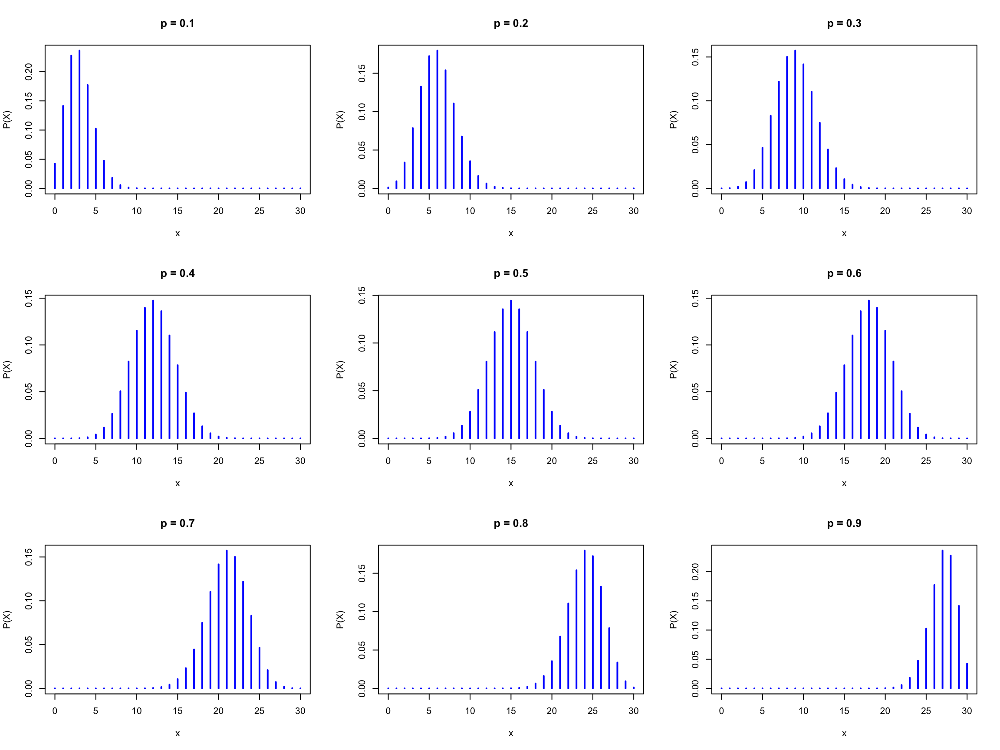

Nuage de points (scatter plot)

Jacques van Helden
2019-09-13
Le but de ce tutoriel est de décuvrir les éléments fondamentaux du langage de statistiques R.
Nous aborderons les éléments suivants:
Manupulation de variables
Structures de base:
Fonctions
Graphiques
Distributions de probabilités
Exemple: une addition avec R.
[1] 7Le résultat affiché (\(7\)) est précédé d’un indice (\([1]\)). Nous verrons ultérieurement l’utilisation de ces indices.
En R, la combinaison de lettres “trait d’union” et “plus petit que” (<-) indique qu’il faut assigner une valeur à une variable.
Ainsi, la commande suivante
Le résultat peut être affiché avec la fonction R print().
[1] 2Remarque : R permet également d’utiliser le symbole “égale” (=) pour effectuer une assignation. Cependant, nous préférons utiliser l’opérateur explicite <-, qui est également préconisé sur les recommandations de style.
Il existe plusieurs conventions possibles pour les noms de variables, de fonction, les opérateurs, etc. Chaque langage de programmation a ses propres standards et recommandations. Pour ce cours nous suivons les recommandations de Google R style guide :
https://google.github.io/styleguide/Rguide.xml
Cependant, pour les identifiants de variables, la notation variable.name est traditionnelle mais pose problème aux personnes familières avec les langages orientés objet, et nous admettons donc la notation alternative en “dos de chameau” de type variableName. Attention, par convention les noms de variables commencent toujours par une minuscule.
[1] 2[1] 5[1] 7[1] 3[1] 5[1] 7[1] FALSENote: == indique qu’on teste si deux variables ont le même contenu. Le résultat est une valeur logique (TRUE ou FALSE).
Quand on change le contenu d’une variable \(a\), une autre variable (\(c\)) préalablement calculées à partir de cette variable n’a aucune raison d’être recalculée si on ne le demande pas explicitement.
Exemple:
[1] 32[1] TRUEEn R, la structure de données la plus simple est un vecteur.
Dans l’exemple précédent, la variable \(a\) ne contenait qu’un seul nombre, mais en pratique elle était stockée dans un vecteur à une seule entrée.
La fonction print() affiche les indices en début de lignes, ce qui est utile quand on affiche des vecteurs avec un grand nombre d’entrées.
Exemple: créer une variable nommée troisNombres, et l’initialiser avec un vecteur dont les valeurs sont 27, 12 et 3000.
Trucs:
c() combine plusieurs valeurs en un vecteur.[1] 27 12 3000La façon la plus simple de créer une série de nombre est d’utiliser le double point, qui génère toutes les valeurs entières entre deux limites.
[1] 0 1 2 3 4 5 6 7 8 9 10 11 12 13 14 15 16 17 18 19 20 21 22
[24] 23 24 25 26 27 28 29 30Note: si l’impression des valeurs du vecteur dépasse la largeur de la console, R passe à la ligne et affiche en début de ligne l’indice du premier élément.
Un autre exemple:
[1] 58 59 60 61 62 63 64 65 66 67 68 69 70 71 72 73 74
[18] 75 76 77 78 79 80 81 82 83 84 85 86 87 88 89 90 91
[35] 92 93 94 95 96 97 98 99 100 101 102 103 104 105 106 107 108
[52] 109 110 111 112 113 114 115 116 117 118 119 120 121 122 123 124 125
[69] 126 127 128 129 130 131 132 133 134 135 136 137 138 139 140 141 142
[86] 143 144 145 146 147 148 149 150 151 152 153 154 155 156 157R permet de manipuler les vecteurs de façon extrêmement pratique. Une opération sur un vecteur s’applique automatiquement à tous ses éléments.
[1] 1 2 3 4 5 6 7 8 9 10 [1] 1 4 9 16 25 36 49 64 81 100La fonction seq() permet de générer des séries de nombres séparés par un intervalle arbitraire.
[1] -1.0 -0.9 -0.8 -0.7 -0.6 -0.5 -0.4 -0.3 -0.2 -0.1 0.0 0.1 0.2 0.3
[15] 0.4 0.5 0.6 0.7 0.8 0.9 1.0Les variables ne se limitent pas aux nombres: elles peuvent contenir du texte (“chaînes de caractères”, “strings” en anglais).
Ici également, nous utilisons la fonction c() pour combiner plusieurs chaînes de caractères dans un vecteur.
# The # symbol allows to insert comments in R code
# Define a vector named "whoami", and
# containing two names
whoami <- c("Denis", "Siméon")
print(whoami) # Comment at the end of a line[1] "Denis" "Siméon"La fonction paste() permet de concaténer les variables contenant du texte.
# To concatenate the elements of a vector in a single chain, use "collapse"
firstName <- paste(collapse = " ", whoami)
print(firstName)[1] "Denis Siméon"# TO concatenate two vectors, use "sep"
lastName <- "Poisson"
print(paste(sep = " ", firstName, lastName))[1] "Denis Siméon Poisson"## Concatenate 2 vectors with 3 values each
firstNames <- c("George", "Alfred", "Frédéric")
lastNames <- c("Sand", "Musset", "Chopin")
fullNames <- paste(sep = " ", firstNames, lastNames)
print(fullNames)[1] "George Sand" "Alfred Musset" "Frédéric Chopin"Notez que la fonction paste() peut aussi s’utiliser pour concaténer toutes les valeurs d’un vecteur, mais ceci requiert de définir l’argument collapse à la place de sep.
[1] "George Sand, Alfred Musset, Frédéric Chopin"R comporte un grand nombre de fonctions permettant de dessiner des graphiques simples ou élaborés. Nous allons explorer ici les méthodes les plus simples.
Exercice: lisez l’aide de la fonction plot() en tapant help(plot), et explorez les paramètres afin d’améliorer le graphique. Consultez également l’aide de la fonction par() (paramètres graphiques).
Vous pouvez par exemple ajouter les éléments suivants:
La solution se trouve sur la diapo suivante (ne regardez pas !).
Exécutez le bloc de code-ci-dessous pour afficher le résultat.
x <- seq(from = -10, to = 10, by = 0.1)
y <- x^2
plot(x,y,
type="l", # Plot type
main = "Parabole", # Main title
xlab = "x", #X label
ylab = "y = x^2", # Y label
col = "blue", # Curve color
lwd = 3, # Line width
las = 1 # display axis labels horizontally
)
grid(lty = "dashed", col="gray") # Grid
abline(h = 0) # Horizontal line
abline(v = 0) # Vertical lineR fournit 4 fonctions pour chacune des des distributions de probabilité classiques.
Avant d’aller plus loin, lisez attentivement l’aide pour les fonctions associées à la distribution binomiale.
Questions:
Exercice: en supposant des nucléotides équiprobables et indépendants, dessiner la distribution de probabilité du nombre d’adénines pour un oligonucléotide de taille 30.
Dans les diapos suivantes, nous vous guidons pas à pas pour débuter l’exercice, et vous pourrez ensuite améliorer le résultat à vote guise.
Le nombre d’adénines peut prendre n’importe quelle valeur entre \(0\) et \(30\). On peut modéliser le problème comme un schéma de Bernoulli avec \(n=30\) essais pouvant chacun résulter en un succès (une adénine) avec une probabilité \(p=0.25\), ou un échec (tout autre nucléotide), avec une probabilité \(q = 1-p = 0.75\).
La probabilité d’observer exactement \(x\) adénine vaut donc.
\[P(X=x) = \binom{n}{x} p^x (1-p)^{n-x} = \frac{30!}{x!(30-x)!} \cdot 0.25^x \cdot 0.75^{n-x}\] où \(x\) peut prendre n’importe quelle valeur entre \(0\) et \(30\).
Nous pouvons sélectionner les 5 premières valeurs de la variable pmf (qui correspondent aux nombres de succès \(x\) allant de \(0\) à \(4\)) …
[1] 0.0001785821 0.0017858209 0.0086314677 0.0268534550 0.0604202738… ou les 4 dernières valeurs (\(x\) allant de \(27\) à \(30\) succès).
[1] 1.925374e-12 9.508019e-14 3.395721e-15 7.806256e-17La fonction round() arrondit un résultat à un nombre donné de décimales.
[1] 0.000 0.002 0.009 0.027 0.060 0.105 0.145 0.166 0.159 0.130 0.091
[12] 0.055 0.029 0.013 0.005 0.002 0.001 0.000 0.000 0.000 0.000 0.000
[23] 0.000 0.000 0.000 0.000 0.000 0.000 0.000 0.000 0.000Pour des distributions de probabilités, on descend assez facilement à des valeurs très faibles, dont on désire connaître l’ordre de grandeur tout en affichant un nombre raisonnable de chiffres significatifs (ceux qui suivent la première décimale non nulle). Pour cela, il est plus pratique d’utiliser la fonction signif().
[1] 1.79e-04 1.79e-03 8.63e-03 2.69e-02 6.04e-02 1.05e-01 1.45e-01
[8] 1.66e-01 1.59e-01 1.30e-01 9.09e-02 5.51e-02 2.91e-02 1.34e-02
[15] 5.43e-03 1.93e-03 6.03e-04 1.66e-04 3.99e-05 8.39e-06 1.54e-06
[22] 2.44e-07 3.33e-08 3.86e-09 3.75e-10 3.00e-11 1.93e-12 9.51e-14
[29] 3.40e-15 7.81e-17 8.67e-19n <- 30; x <- 0:n # Define the X values from 0 to 14
y <- dbinom(x = x, size = n, prob = 0.25) # Poisson density
plot(x,y) # Check the result
Ce premier dessin n’est pas très élégant. Les points ne se détachent pas très bien du fond. Nous allons améliorer ce dessin.
Utilisez les différentes option de la fonction plot() pour mieux mettre en évidence la forme de la distribution (résultat attendu sur la diapo suivante).
Commencez par choisir un type de points (option type) qui donne l’impression de la hauteur de la probabilité (valeur \(Y\)) correspondant à chaque point de l’axe \(X\).
Ajoutez un titre (option main) et adaptez les légendes aux axes (options xlabet ylab)
Colorez le dessin (option col)
Epaississez les traits (option lwd)
Ajoutez une grille horizontale (fonction grid())
Assurez-vous que les étiquettes des axes soient toutes horizontales (option las).

Dessinez une série de courbes binomiales avec \(n=30\) essais, et des valeurs de \(p\) allant de \(0.1\) à \(0.9\) par pas de \(0.1\).


La traçabilité et la reproductibilité des analyses constituent un enjeu essentiel en sciences. La fonction R sessionInfo() fournit un résumé des conditions d’une session de travail: version de R, système opérateur, bibliothèques de fonctions utilisées.
R version 3.6.1 (2019-07-05)
Platform: x86_64-apple-darwin15.6.0 (64-bit)
Running under: macOS High Sierra 10.13.6
Matrix products: default
BLAS: /Library/Frameworks/R.framework/Versions/3.6/Resources/lib/libRblas.0.dylib
LAPACK: /Library/Frameworks/R.framework/Versions/3.6/Resources/lib/libRlapack.dylib
locale:
[1] en_US.UTF-8/en_US.UTF-8/en_US.UTF-8/C/en_US.UTF-8/en_US.UTF-8
attached base packages:
[1] stats graphics grDevices utils datasets methods base
other attached packages:
[1] knitr_1.23
loaded via a namespace (and not attached):
[1] compiler_3.6.1 magrittr_1.5 tools_3.6.1 htmltools_0.3.6
[5] yaml_2.2.0 Rcpp_1.0.2 stringi_1.4.3 rmarkdown_1.14
[9] stringr_1.4.0 xfun_0.8 digest_0.6.20 evaluate_0.14